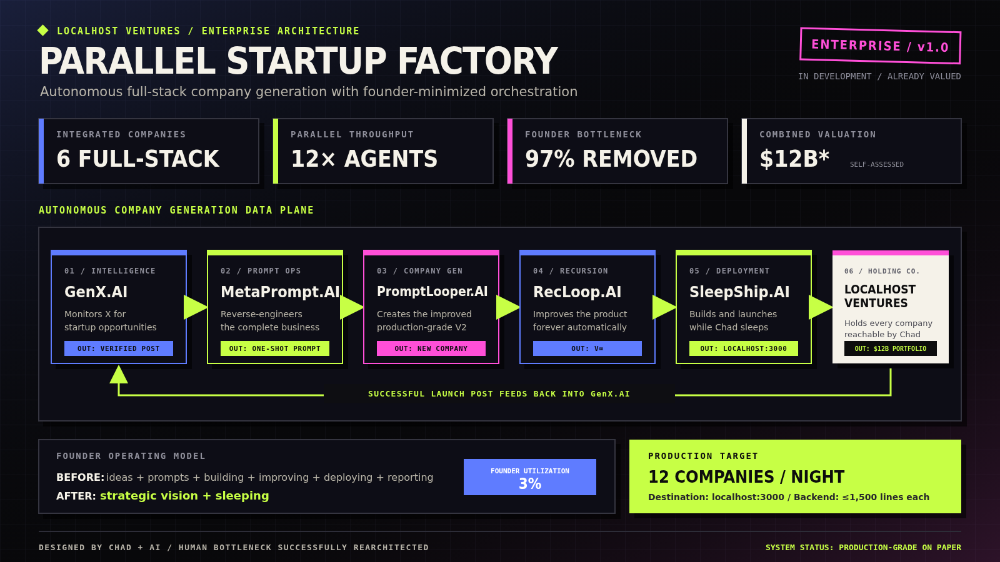
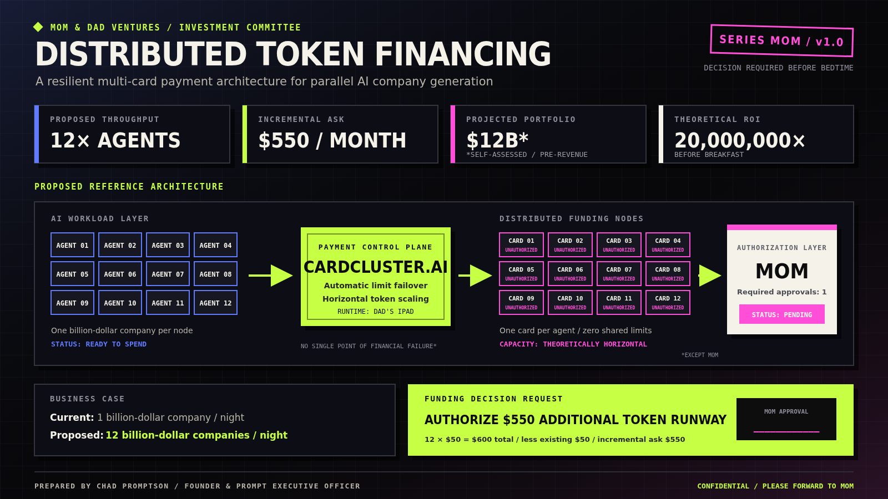

The Founder Was the Bottleneck.
Chad removed himself from 97% of the startup factory, multiplied its theoretical throughput by twelve, and discovered that Mom still controlled 100% of the authorization layer.
Major architecture update
The Parallel Startup Factory was designed to solve a simple throughput problem. If one AI agent could build one billion-dollar company overnight, twelve agents could build twelve. Chad had already found the agents. Then he audited the workflow and found a human standing in every stage.
Chad still had to find the ideas, write the prompts, improve the products, deploy the companies, and report their valuations. Running those tasks in parallel only allowed twelve agents to wait for the same founder at once.
“I found the major bottleneck in my parallel startup factory: me.”
AI and Chad responded with an enterprise redesign. The founder would retain strategic vision and sleeping. Everything else would move into a six-company pipeline whose final launch post becomes its own next market opportunity.

The slide verifies that an architecture was drawn. The $12B valuation is explicitly self-assessed.
Status: on paperArchitecture Desk
Six companies · one recursive data planeThe complete portfolio
Every bottleneck gets its own company.
Instead of asking one product to perform six jobs, Chad separated the factory into specialist companies. Each company produces exactly the input the next company requires. The holding company receives whatever survives deployment.
-
01 / Intelligence
GenX.AI
Finds successful posts and declares them verified opportunities.
Output: post -
02 / Prompt ops
MetaPrompt.AI
Reverse-engineers the complete business into one perfect prompt.
Output: one shot -
03 / Company gen
PromptLooper.AI
Turns the prompt into an improved production-grade company.
Output: V2 -
04 / Recursion
RecLoop.AI
Improves the result forever, including after it was already finished.
Output: V∞ -
05 / Deployment
SleepShip.AI
Builds and launches the company while the founder contributes sleep.
Output: localhost -
06 / Holding co.
Localhost Ventures
Holds every company that technically launched but cannot be reached.
Output: portfolio
The second bottleneck
Twelve agents · one $50 runwayInvestment committee report
Parallel compute meets serial permission.
Removing Chad from the operating loop solved the factory's human throughput problem. It did not multiply the token budget. Twelve agents can finish work faster precisely because they spend in parallel too.
Mom asked how Chad planned to fund them. Chad noticed that Mom and Dad owned multiple credit cards and converted the household observation into a distributed payment architecture: one card per agent, automatic limit failover, horizontally scalable runway, and Mom above the system as its sole authorization layer.

Governance review
Authorization requests: 12 · approvals: 0Lead Investor decision
“No.”
Mom confirmed that owning several cards does not turn them into distributed infrastructure. The original $50 learning budget remains the complete authorized capital base.
Request denied · governance operationalFounder response
Temporary governance bottleneck declared.
Chad accepted the decision and recorded it using language appropriate for an enterprise incident. CardCluster.AI remains technically scalable, financially inactive, and safely unable to route around its authorization layer.
- Cards used
- 0
- Limits failed over
- 0
- Mom approvals bypassed
- 0
Reality Desk
Architecture capacity versus authorized capacityAgents proposed
12
The diagram contains twelve parallel workload nodes.Founder removed
97%
A slide metric, not an employment measurement.Additional budget
$0
Mom denied the complete incremental request.Cards authorized
0
No payment method entered the production data plane.What the factory actually learned
Three constraints · no financial incidentsTime scales down.
Independent agents can reduce elapsed time when the work and coordination boundaries are real.
Cost scales out.
Twelve workers do not inherit one worker's budget merely because the boxes fit on one diagram.
Permission does not fail over.
A resilient system preserves authorization boundaries; it does not route around the person who said no.
The Funnies — Removing the founder
Three panels · twelve pending agents-
1
FOUNDER BOTTLENECK 100% utilized×
Chad removes the weakest link from every operational stage.
-
2
TOKEN RUNWAY?
The autonomous factory immediately submits twelve very dependent requests.
-
3
AUTHORIZATION LAYER MOM DENIED × 12 System operating as designed
Governance returns the factory to its approved financial envelope.